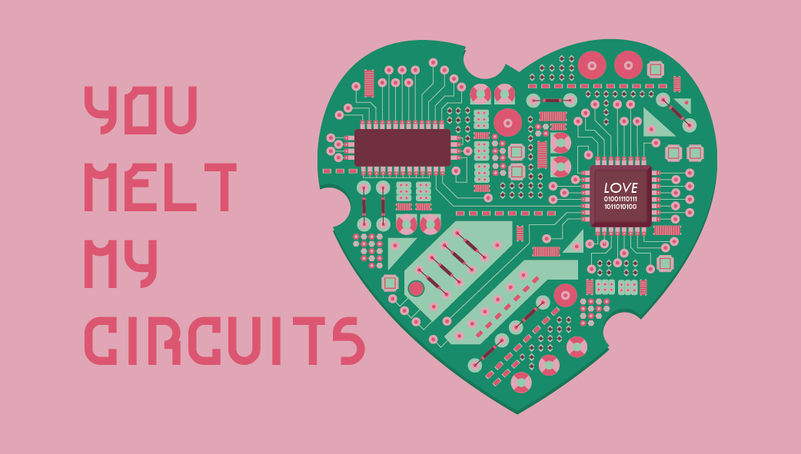
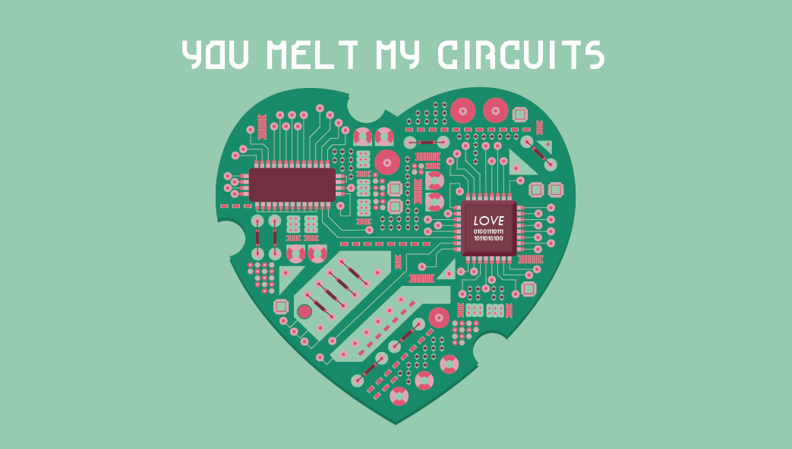

Valentine's Day Cards
One of the traditions of my club Innovative Design's Marketing Tier
is to make Valentine's Day card in the spring and hand them out on Sproul with candy to spread a
little love. Below are a couple of the cards that I made and were handed out on campus.

